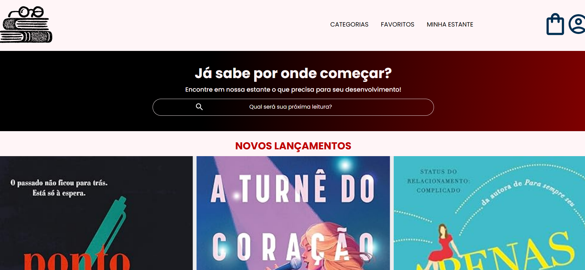
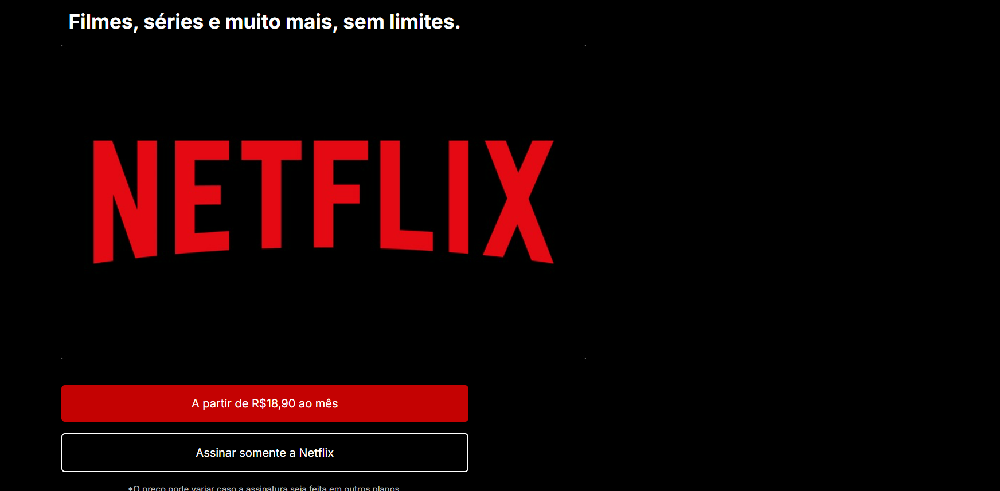
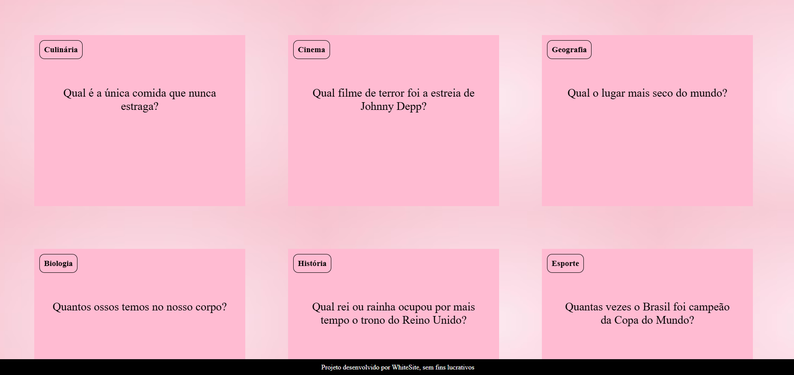

Meus projetos

Minha Biblioteca Divertida
Este projeto é uma página onde apresenta meus principais interesses literários, com diversos livros e novidades, como uma biblioteca virtual.

Meu Projeto de Streaming
Este projeto é uma página que mostra o início um site/app de streaming, antes de sua assinatura, a Netflix.

Busca por Conhecimento
Este projeto é uma página que tem como objetivo mostrar perguntas interativas e que nos dê conhecimento.